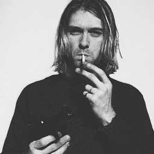

The Final Days

Kurt Cobain’s Downward Spiral: The Last Days of Nirvana’s Leader
On April 8, shortly before 9 a.m., Kurt Cobain‘s body was found in a greenhouse above the garage of his Seattle home. Across his chest lay the 20-gauge shotgun with which the 27-year-old singer, guitarist and songwriter ended his life. Cobain had been missing for six days.
An electrician installing a security system in the house discovered Cobain dead. Though the police, a private-investigation firm and friends were on the trail, his body had been lying there for two and a half days, according to a medical-examiner’s report. A high concentration of heroin and traces of Valium were found in Cobain’s bloodstream. He was identifiable only by his fingerprints.
Mark Lanegan, a member of Screaming Trees and a close friend of Cobain’s, says he didn’t hear from Cobain that last week. “Kurt hadn’t called me,” he says. “He hadn’t called some other people. He hadn’t called his family. He hadn’t called anybody.” Lanegan says he had been “looking for [Kurt] for about a week before he was found... I had a feeling that something real bad had happened.”
Cobain’s friends, family and associates had been worried about his depression and chronic drug use for years. “I was involved in trying to get Kurt professional help on numerous occasions,” says former Nirvana manager Danny Goldberg, now president of Atlantic Records.
It wasn’t, however, until eight days after Cobain returned to Seattle from Rome to recuperate from a failed suicide attempt in March that those close to him realized that it was time to resort to drastic measures. Cobain had gone “cuckoo,” says Gold Mountain Entertainment’s Janet Billig, who manages Courtney Love’s band Hole. Along with several domestic disputes, Cobain’s relationship with Nirvana was rocky. In fact, Love told MTV that Cobain said to her in the weeks after Rome: “I hate it — I can’t play with them anymore.” She added that he only wanted to work with Michael Stipe of R.E.M.
“In the last few weeks, I was talking to Kurt a lot,” Stipe said in a statement. “We had a musical project in the works, but nothing was recorded.”
On March 18, a domestic dispute escalated into a near disaster. After police officers arrived at the scene, summoned by Love, she told them that her husband had locked himself in a room with a 38-caliber revolver and said he was going to kill himself. The officers confiscated that gun and three others, along with a bottle of various unidentified pills. Later that night, Cobain told them that he hadn’t actually been planning to take his own life.
At this point, Love, along with Cobain’s other family members, band mates and management company, began talking to a number of intervention counselors, including Steven Chatoff, executive director of Anacapa by the Sea, a behavioral health center for the treatment of addictions and psychological disorders, in Port Hueneme, Calif. “They called me to see what could be done,” says Chatoff. “He was using, up in Seattle. He was in full denial. It was very chaotic. And they were in fear for his life. It was a crisis.”
Chatoff began interviewing friends, family members and business associates in preparation for enacting a full-scale intervention. According to Chatoff, someone then tipped off Cobain, and the procedure had to be canceled. Nirvana’s management, Gold Mountain, claims that it found another intervention counselor and told Chatoff a small lie to turn down his services politely.
Meanwhile, Roddy Bottum, an old friend of Love and Cobain’s and the keyboardist for Faith No More, flew from San Francisco to Seattle to care for Cobain. “I really loved Kurt” Bottum says, “and we got along really well. I was there to be with him as a friend.”
On March 25, roughly 10 friends — including band mates Krist Novoselic and Pat Smear, Nirvana manager John Silva, Billig, longtime friend Dylan Carlson, Love and Goldberg (Bottum had already gone home) — gathered at Cobain’s home on Seattle’s Lake Washington Boulevard to take a different approach with a new intervention counselor. (Novoselic is said to have staged his own separate confrontation with Cobain as well.) As part of the intervention, Love threatened to leave Cobain, and Smear and Novoselic said they would break up the band if Cobain didn’t check into rehab. After a tense five-hour session in the two-day process, Cobain retired to the basement with Smear, where they rehearsed some new material.
Love had hoped to coax Cobain into flying to Los Angeles with her so that the couple could check into rehab together. Instead, she wound up on a plane with Billig at the end of the first day of intervention. (The couple’s daughter, Frances Bean, and a nanny followed the next day.) Love would say that she regretted leaving Cobain alone (“That ’80s tough-love bullshit — it doesn’t work,” she said in a taped message during a memorial vigil for Cobain two weeks later). After a stop in San Francisco, Billig and Love flew to Los Angeles, and on the morning of the 26th, Love checked into the Peninsula Hotel, in Beverly Hills, and began an outpatient program to “detox from tranquilizers,” according to Billig.
Back in Seattle, Cobain stopped by Carlson’s condominium on March 30 to ask for a gun because, Cobain said, there were trespassers on Cobain’s property.
“He seemed normal, we’d been talking,” Carlson says. “Plus, I’d loaned him guns before.” Carlson believes Cobain didn’t want to buy the shotgun himself because he was afraid the police would confiscate it, since they had taken his other firearms after the domestic dispute that had occurred 12 days earlier.
Cobain and Carlson headed to Stan’s Gun Shop nearby and purchased a six-pound Remington 20-gauge shotgun and a box of ammunition for roughly $300, which Cobain gave Carlson in cash. “He was going out to L.A.,” Carlson says.“It seemed kind of weird that he was buying the shotgun before he was leaving. So I offered to hold on to it until he got back.” Cobain, however, insisted on keeping the shotgun himself. The police believe that Cobain dropped the weapon off at his home and left Seattle to check himself into rehab. Smear and a Gold Mountain employee met Cobain at the Los Angeles airport and drove him to the Exodus Recovery Center, in the Daniel Freeman Marina Hospital, in Marina del Rey, Calif.
Despite his inability to proceed with his plan, Chatoff says he spoke with Cobain by phone several times before Cobain left for Los Angeles. “I was not supportive of that at all,” says Chatoff of Cobain’s admittance to Exodus, “because that was just another detox ‘buff and shine.'”
Cobain spent two days at the 20-bed clinic. On April 1 he called Love, who was still at the Peninsula. “He said, ‘Courtney, no matter what happens, I want you to know that you made a really good record,'" she later told a Seattle newspaper. “I said, ‘Well, what do you mean?’ And he said, ‘Just remember, no matter what, I love you.'” (Hole were due to release their second album, Live Through This, 11 days later.) That was the last time Love spoke to her husband.
According to one of Cobain’s visitors at the clinic, “I was ready to see him look like shit and depressed. He looked so fucking great. He walked out an hour later.” At 7:25 p.m., Cobain told the clinic staff he was stepping out onto the patio for a smoke and, according to Love, “jumped over the fence.” Actually, it was a brick wall more than 6 feet high. “We watch our patients really well,” says a spokesperson for Exodus. “But some do get out.” (...)